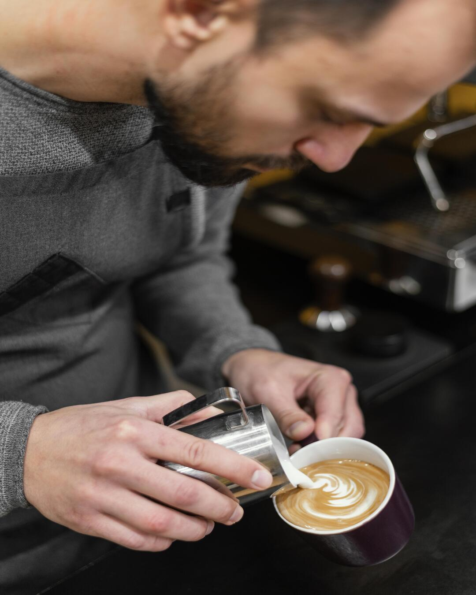

Café con experiencia
Nuestro café es preparado por baristas apasionados, que ponen todo su conocimiento y dedicación en cada taza.

El eco de un buen café perdura
Cullen's Coffee abrió sus puertas en junio de 2020, y desde entonces nos hemos dedicado a servir con orgullo a nuestra comunidad, ofreciendo oportunidades de formación y empleo para jóvenes, apoyando su desarrollo y fomentando el crecimiento del talento local. Nuestra pasión está con nuestros colaboradores, nuestros proveedores y, sobre todo, con nuestros clientes, siendo parte activa del corazón de nuestra comunidad.
Desde los cambios recientes en la industria y la manera de trabajar, hemos evolucionado nuestra forma de servir, pero nuestro propósito sigue siendo el mismo: ofrecer café de calidad y una selección de alimentos deliciosos, sin pretensiones ni exclusividad, cuidando siempre la estacionalidad, la calidad y el origen de los productos que ofrecemos.
Nuestro café es preparado por baristas apasionados, que ponen todo su conocimiento y dedicación en cada taza.
Solo trabajamos con granos elegidos a mano, asegurando sabor, aroma y frescura en cada taza.
Nuestros granos se transforman en distintas preparaciones, para que descubras nuevos matices en cada taza.